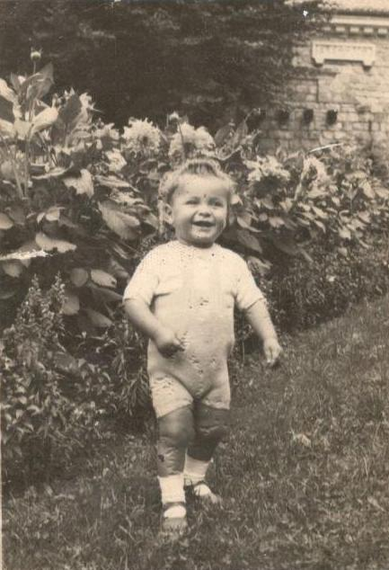
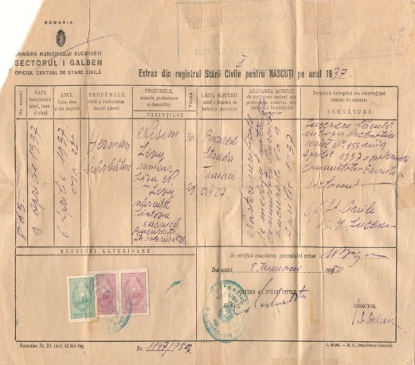
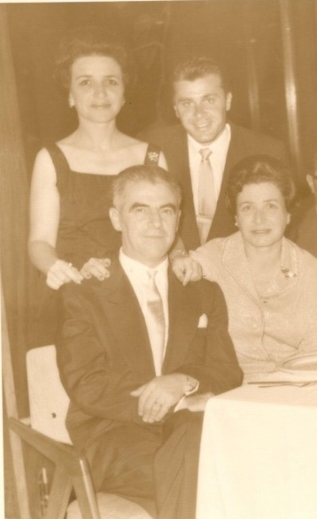
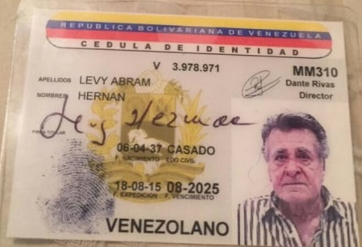
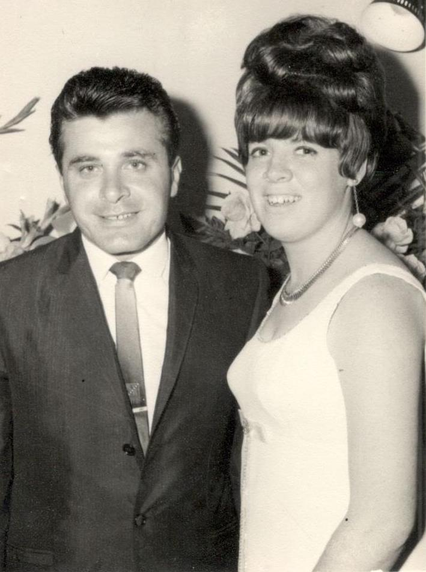
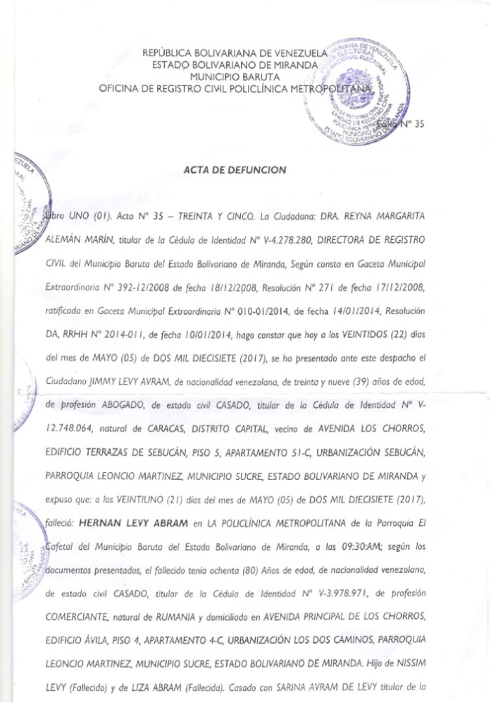
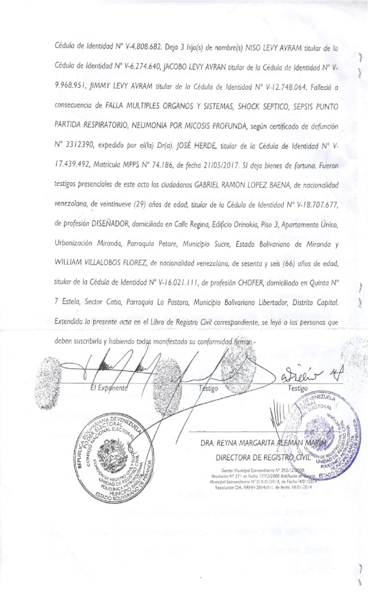
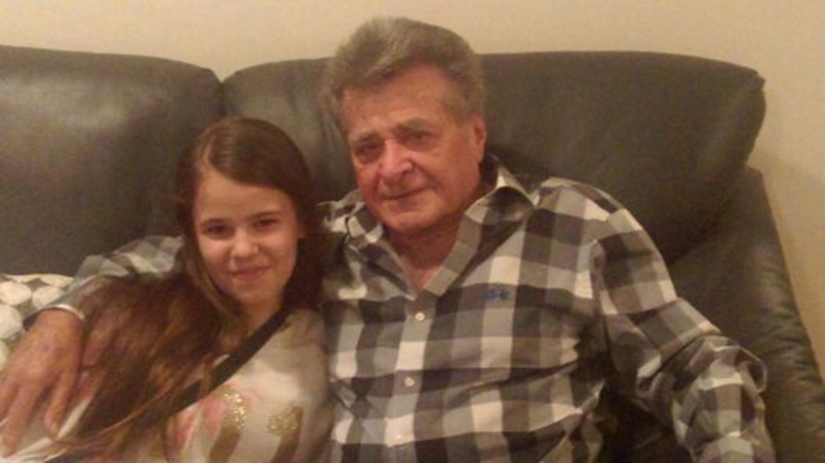
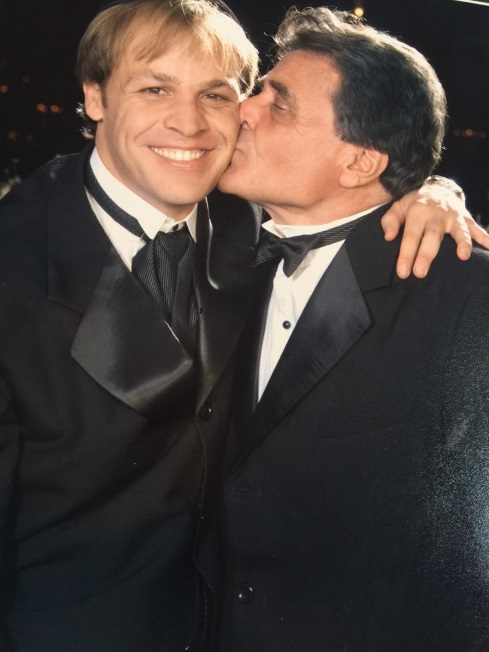
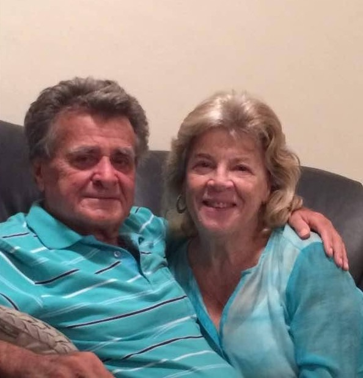

Mi abuelo, Hernan (Nico) Levy
Mi
abuelo Nico nació en Bucarest, Rumania el 06 de Abril en el año
1937. Creció rodeado de una familia judía compuesta por tres
personas, el papá (mi bisabuelo Nissim Levy) de Turquía, la mamá (
mi bisabuela Liza Abramova) de Bulgaria y su hermano menor ( mi tío
abuelo Salomón Levy)nacido Rumania.
En aquellos tiempos la situación económica de la familia era
bastante estable. A la edad de 5 años,miabuelo Nico ingresó a un
internado alemán en Rumania. Luego de tres años, cuando la Segunda
Guerra Mundial afectó a la familia, los padres del abuelo una noche
decidieron sacarlo del internado y huir del país. De los recuerdos
de su vivencia familiar por las circunstancias anteriormente
descritas, tiene muy pocos; recuerda que su papá era comerciante,
no tenía relaciones con personas que no eran judías. De sus
estudios sabemos que recibía educación general sin incluir
religión, los profesores no eran judíos y los alumnos no iban al
colegio uniformados. Con respecto a las costumbres y ritos judíos no
cumplían con estos.
1 PARTIDA DE NACÍMENTO
Como consecuencia de la Segunda Guerra Mundial emigraron finalmente a Israel; la familia de mi abuelo estaba en una grave situación económica, así que tomaron la decisión de enviar a mi abuelo a un kibutz en el norte del país, mi abuelo contaba que él odiaba la vida del kibutz, él solía contar que se escapaba en las noches a vender manzanas para poder ganar un poco de dinero y así poder de vez en cuando ir a visitar a mis bisabuelos y mi bisabuela siempre solía decir: “ Nico que haces aquí si no tenemos plata ni para darte de comer te pueden descubrir”. Su familia vivía en una casa hecha de lona, donde no había baños privados y se compartía todo. En esa Mahabara llegaron a vivir entre 5-6 personas. Mi abuelo creció solo y trabajo muy fuerte. A los 18 años el abuelo formó parte de las defensas israelíes, siendo un soldado combatiente en la Guerra del Sinaí. Formó parte de la unidad de tanques, donde en ese tiempo fue herido en medio de la batalla.
En el año 1958 mi abuelo llega a Caracas, Venezuela, donde ya parte de su familia estaba instalada. Cuando llegó a Caracas pensó que por fin había llegado el tiempo de compartir y conocer a la familia (sus padres), pero lamentablemente su padre muere al poco tiempo de su llegada.

2
En esta imagen aparece Mi
abuelo Nico y su prima Olga y abajo July y Jean tíos de de mi
abuelo que ya se encontraban en Caracas.

En un viaje que realizó para participar en las Macabiadas en Cali, Colombia conoció a mi abuela Sarina, a la cual a 8 días de conocerse le pidió la mano, y a los 6 meses felizmente se casaron, y crearon una hermosa familia compuesta de 3 hijos, 14 nietos y dos bisnietos.

Desde que llegó a Venezuela mi abuelo trabajó arduamente y logró montar una fábrica de ropa y dos tiendas de vestidito de niñas en el centro donde actualmente está Metro Center, que de hecho en el año 1977 la expropiaron las tiendas para construir ese centro comercial y el Metro de Caracas, por lo tanto tuvo que quedarse con la fábrica, que quedaba en el centro de Caracas. En el año 2008 empezó a trabajar en la distribuidora de productos de limpieza de mi papá, hasta que tuvo que renunciar porque ya se le hacía muy pesado el trabajo, mi abuelo se encontraba muy débil.
En el año 2014 mi abuelo empezó a decir que le molestaba el pecho y comenzó a tener gripes muy fuertes por lo que le tuvieron que hacer varios exámenes en los pulmones, pero todos salían bien, así que le dieron muchos medicamentos pero nada cambiaba, hasta que en su último año lo tuvieron que hospitalizar mucho más seguido y al cambiar de médico, éste le dijo que tenía que haber algo más. Procedieron a realizarle otros exámenes y descubrieron que tenía un hongo en el pulmón. Lo metieron en terapia intensiva, ya que para ese momento uno de sus pulmones no funcionaba y el otro ya casi no lo hacía ya que el hongo ya estaba muy avanzado y la medicina que le estaban dando por las gripes volvía el hongo peor. Comenzaron el tratamiento hasta que dijeron que ya estaba mejor. El viernes 19 mayo les dijeron a mis tíos q le iban a dar de alta el lunes 22 de mayo, el sábado 20 dijeron que las cosas se había complicado así que llamaron a mis padres y después de Shabat se fueron directo a la clínica donde les dijeron que lo tuvieron que entubar y que iban a hacer todo lo posible para poder sacarlo el lunes, el domingo 21 de mayo se dieron cuenta que ya era muy tarde así que llamaron a mis papás para que fueran a despedirse. Ahí estuvieron todos; mis papás, tíos y abuela a las 7 de la mañana y a las 9:30 lastimosamente mi abuelo falleció.

Mi anécdota sobre la muerte de mi abuelo
El sábado 20 de mayo mi papá y yo estábamos caminando juntos hacia la sinagoga como de costumbres y no me recuerdo como pero salió el tema de mi abuelo, y recuerdo que mi papá me contó que él nunca tuvo mucha relación con mi abuelo ya que él era una persona muy solitaria pero que los pocos recuerdos que tenía con su papá eran muy preciados, también me recuerdo que me dijo de lo muy arrepentido que estaba de no haber pasado más tiempo con su padre y que el tiempo que le quedara a mi abuelo él iba a remediar su error e iba a estar más tiempo con él. Recuerdo que el día que murió mi abuelo en la mañana, justo cuando llamaron a mis papás yo pensé que todo iba a salir bien ya que los llamaban muy seguido, así que yo me fui a mis clases de bailes como todos los domingos, me recuerdo que mi abuela Elena me vino a buscar de bailes y que lo primero que me dijo con lágrimas en los ojos fue: “tu abuelo falleció”, yo no sabía que hacer, al principio la noticia no me había afectado en nada ya que yo no conocía casi a mi abuelo, llegué a casa de mi abuela Elena y me quedé ahí por un rato hasta que ella me preguntó si quería ir al entierro y dije que sí. En el cementerio yo todavía no sentía ninguna diferencia hasta que vi cuando estaban metiendo a mi abuelo en el hueco de tierra y ahí caí en cuenta que era mi abuelo quien estaba siendo enterrado y me lo imagine perfecto justo ahí con tierra en la cara y justo en ese momento me recordé de lo que me había dicho mi papá justo el día anterior y ese fue el momento en que empecé a llorar aunque intentaba de ocultarlo ya que me daba pena. Luego nos fuimos directo a mi casa ya que ahi fue la Shiva (donde mis tíos, abuela y papá se sentaron en duelo). El primer día no vino casi nadie pero me recuerdo la cara de tristeza que tenían todos, yo no sabía que hacer así que le pedí el teléfono a mi abuela y me encerré en mi cuarto a hablar con mis amigas. Ese mismo día mi hermana y yo estábamos hablando con mi papá sobre mi abuelo y él nos contó detalle por detalle cuando murió mi abuelo y justo lo que sintió en ese momento, yo sentí que mi corazón iba a explotar, mi hermana y yo salimos del cuarto de mis padres y nos fuimos cada una a los nuestros. Yo me encerré y caí en llanto y poco después mi hermana entró llorando también, pues lo que nos había dicho mi papá nos afectó a ambas, así que ella se quedó en mi cuarto hasta que ambas nos calmamos. Cada día, yo actuaba como si nada hubiera pasado, pero en la noche cuando todos estaban dormidos me sentaba en mi cama a hablar con él ya que sentía su presencia ahí conmigo y le contaba todo lo que sentía y lloraba ya que me sentía culpable de no haber pasado más tiempo con él, y todavía cuando recuerdo la historia siento que mi abuelo me está escuchando y que él me disculpa.

Los recuerdos de mi papá
Mi papá cuenta que mi abuelo era una persona que no le daba pena nada que cuando mi papá era pequeño y le pedía a mi abuelo que le comprara algo él llegaba en cualquier momento e iba a gritar: “ Jacky ya te compré el desodorante” o lo que sea que le había pedido, y mi papá no sabía en dónde meterse de la pena. también decía que su papá (mi abuelo) no salía mucho con ellos por eso recuerda un día especial que llevó a mi papá y a mi tío Niso a jugar fútbol a un parque que hasta hoy en día existe el cual es El Mirador de la Cota mil que está ubicado entre la Florida y la Castellana. Pero así como no salía con ellos daba todo por sus hijos, como darle el carro a mi papá para que se fuera a estudiar sin importar que mi abuelo se fuera en transporte público, o cuando a mi papá en Purim se la cayó un botón del disfraz y mi abuelo se fue corriendo a la casa a buscar hilo y agujas para arreglárselo. Como esas historias hay mil y un ejemplos más de cómo mi abuelo daba todo por su familia.

Los recuerdos de mi abuela
Mi abuela dice que mi abuelo era un buen padre que siempre se dedicó a sus hijos y a su familia. Ella cuenta que cada vez que venían mi papa y mis tíos a la clínica a visitarlo, mi abuelo le decía: “ves Sarina ese es mi kadish”, y por eso aunque el rezo del muerto no lo deberían recitar todos los hermanos juntos por ain hara (mal de ojo) mi papá y tíos siempre lo dicen juntos ya que saben que ese era el deseo de su padre. Mi abuela recuerda que cuando celebramos su último cumpleaños unos días antes de morir y un poco después de volver de la clínica otra vez, estábamos en la casa y él agarra a mi abuela y le dice: “Mira Sarina, que familia tan grande y bella hemos creado”.
